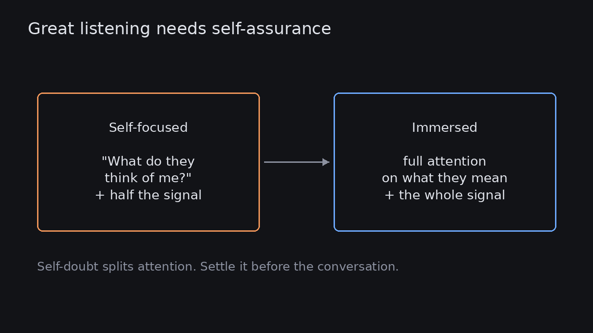

Great listening needs self-assurance: self-doubt steals your attention
Source: Shreyas Doshi (@shreyas)
original post
What it claims
Shreyas Doshi says you can't be a great listener if you have low self-esteem or self-doubt. With either one, part of your mind is busy with what the other person thinks of you. Great listening needs complete concentration, almost immersion, with no attention on yourself.
Why it matters for a PO
Stakeholder interviews, customer calls and tough conversations with executives are where a PO gets the information that matters, and they are also where a PO feels most judged. If half your attention goes to how you are coming across, you miss the hedge, the pause or the real objection. In practice, being confident about your role is a precondition for discovery, not only a personal-growth topic.
3 takeaways
- If you are wondering how you come across, you are listening with only part of your attention.
- Settle the self-doubt before the meeting: prepare, know your aim, and accept that you don't need to look clever in it.
- Use something that keeps your attention on them, such as taking notes in their words or playing back what you heard, so attention can't drift back to you.
Practice this week
In your next stakeholder or customer conversation, keep a tally of each time you catch yourself thinking about how you are coming across. Afterwards, write down the three most important things the other person said, in their words. If you can't, the tally explains why.